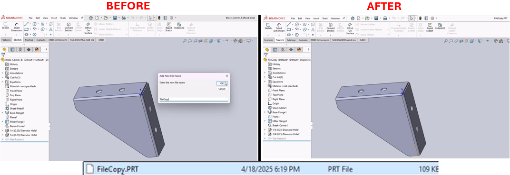

Custom Properties and Save As Macro
Description
This macro automates the process of managing custom properties and saving a SolidWorks model with a new file name in a user-specified folder. It is particularly useful for standardizing and organizing files with consistent metadata and locations.
System Requirements
- SolidWorks Version: SolidWorks 2014 or newer
- Operating System: Windows 7 or later
Pre-Conditions
Note
- A SolidWorks model document must be open.
- The macro requires the user to input a new file name and select a target folder for saving the file.
Results
Note
- Existing custom properties (
drawing number,old drawing number,search description, andmaterial) are removed and replaced with new ones. - The document is saved with the specified file name in the chosen folder.
Steps to Setup the Macro
1. Run the Macro:
- The macro will prompt you to input a new file name.
- After entering the name, you will be asked to select a target folder using a folder browser dialog.
- The macro will then save the document with the specified name and add predefined custom properties.
2. Custom Property Management:
- You can edit the custom properties added by modifying the relevant lines in the macro code.
VBA Macro Code
' Disclaimer:
' The code provided should be used at your own risk.
' Blue Byte Systems Inc. assumes no responsibility for any issues or damages that may arise from using or modifying this code.
' For more information, visit [Blue Byte Systems Inc.](https://bluebyte.biz).
Option Explicit
' Declare SolidWorks application and model variables
Dim swApp As SldWorks.SldWorks
Dim swModel As SldWorks.ModelDoc2
Dim retval As String
Dim FileName As String
Dim Path As String
Sub main()
' Initialize SolidWorks application and active document
Set swApp = Application.SldWorks
Set swModel = swApp.ActiveDoc
' Ensure a document is active
If swModel Is Nothing Then
MsgBox "No active document found. Please open a SolidWorks file and try again.", vbCritical, "Error"
Exit Sub
End If
' Remove existing custom properties
retval = swModel.DeleteCustomInfo2("", "drawing number")
retval = swModel.DeleteCustomInfo2("", "old drawing number")
retval = swModel.DeleteCustomInfo2("", "search description")
retval = swModel.DeleteCustomInfo2("", "material")
' Add new custom properties with default values
retval = swModel.AddCustomInfo3("", "drawing number", swCustomInfoText, "")
retval = swModel.AddCustomInfo3("", "old drawing number", swCustomInfoText, "")
retval = swModel.AddCustomInfo3("", "search description", swCustomInfoText, "")
retval = swModel.AddCustomInfo3("", "material", swCustomInfoText, """SW-Material""")
' Prompt user for a new file name
FileName = InputBox("Enter the new file name", "Add New File Name", FileName)
If FileName = "" Then
MsgBox "File name cannot be empty. Please try again.", vbExclamation, "Error"
Exit Sub
End If
' Prompt user for folder selection
Path = BrowseFolder("Select a Folder/Path")
If Path = "" Then
MsgBox "You must select a valid folder to save the file.", vbExclamation, "Error"
Exit Sub
End If
' Ensure the folder path ends with a backslash
If Right(Path, 1) <> "\" Then Path = Path & "\"
' Save the file with the new name in the selected folder
swModel.Extension.SaveAs Path & FileName & ".prt", swSaveAsVersion_e.swSaveAsCurrentVersion, swSaveAsOptions_e.swSaveAsOptions_Copy, Nothing, 0, 0
' Notify the user of successful save
MsgBox "File saved successfully at: " & Path & FileName & ".prt", vbInformation, "Save Successful"
End Sub
' Function to open a folder browser dialog
Function BrowseFolder(Optional Title As String) As String
Dim SH As Object
Dim F As Object
' Create Shell Application object
Set SH = CreateObject("Shell.Application")
' Open the folder browser dialog
Set F = SH.BrowseForFolder(0, Title, 0)
If Not F Is Nothing Then
BrowseFolder = F.Items.Item.Path ' Get selected folder path
Else
BrowseFolder = "" ' Return empty if no folder selected
End If
End Function
Folder Browser Module Code
Option Explicit
Private Const BIF_RETURNONLYFSDIRS As Long = &H1
Private Const MAX_PATH As Long = 260
' Windows API declarations
Declare Function SHGetPathFromIDListA Lib "shell32.dll" ( _
ByVal pidl As Long, _
ByVal pszBuffer As String) As Long
Declare Function SHBrowseForFolderA Lib "shell32.dll" ( _
lpBrowseInfo As BrowseInfo) As Long
' Structure for folder browsing dialog
Type BrowseInfo
hOwner As Long
pidlRoot As Long
pszDisplayName As String
lpszINSTRUCTIONS As String
ulFlags As Long
lpfn As Long
lParam As Long
iImage As Long
End Type
' Function to display a folder selection dialog
Function BrowseFolder(Optional Caption As String = "Select a Folder") As String
Dim BrowseInfo As BrowseInfo
Dim FolderName As String
Dim ID As Long
Dim Res As Long
' Initialize the BrowseInfo structure
With BrowseInfo
.hOwner = 0
.pidlRoot = 0
.pszDisplayName = String$(MAX_PATH, vbNullChar)
.lpszINSTRUCTIONS = Caption
.ulFlags = BIF_RETURNONLYFSDIRS
End With
' Prepare a buffer for the folder path
FolderName = String$(MAX_PATH, vbNullChar)
' Display the folder selection dialog
ID = SHBrowseForFolderA(BrowseInfo)
If ID Then
' Convert the PIDL to a file system path
Res = SHGetPathFromIDListA(ID, FolderName)
If Res Then
BrowseFolder = Left$(FolderName, InStr(FolderName, vbNullChar) - 1)
Else
BrowseFolder = ""
End If
Else
BrowseFolder = ""
End If
End Function
Macro
You can download the macro from here
Customization
Need to modify the macro to meet specific requirements or integrate it with other processes? We provide custom macro development tailored to your needs. Contact us.